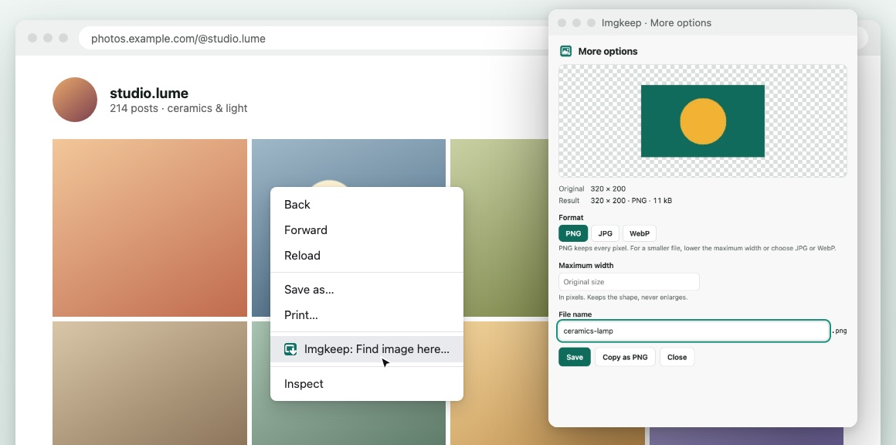

How to save photos from Facebook
Short answer
Facebook often covers photos with other layers, so a right-click doesn't reach the image. Open the photo on its own: the photo viewer's options menu may offer Download. For your own photos, use Download your information. Or use Imgkeep's Find image here or Alt+S on a photo you can see.
Updated
Updated . Signed out, Facebook covered the page with a sign-in box; its photo viewer needs an account, so it's described here in general terms. If something looks different, tell us at helloimgkeep@gmail.com.
Why can't I right-click a Facebook photo?
Facebook puts other elements over many photos, in the feed and in grids, so your right-click lands on them and the browser shows a menu without Save image as. Signed out, Facebook also covers pages with a sign-in box.
Everything below is for photos you can see while signed in. Photos shared only with others, or in private groups, stay private: nothing here is a way around that.
How do I save a Facebook photo without an extension?
- The photo viewer. Click the photo to open it on its own, then open its options menu (⋯). If it offers Download, that's the simplest way.
- Your own photos. In Accounts Center, under Your information and permissions, Download your information gives you a copy of what you've posted.
- The image's address. Right-click the photo, choose Inspect, find the
<img>near the highlighted element, and open its address in a new tab to save it. - A screenshot. At the size shown on screen.
How do I save it with Imgkeep?
Imgkeep is a browser extension that saves images as PNG, JPG, WebP, GIF or PDF from the right-click menu. We make it. It isn't affiliated with or endorsed by Facebook.
- Right-click the photo and choose Imgkeep: Find image here…. Imgkeep finds the image under the layer, at the largest size the page offers, and opens it in More options: pick JPG, PNG or another format, then Save or Copy as PNG.
- Or point at the photo and press Alt+S (Option+S on a Mac, Alt+Shift+S in Firefox) to save it in the format you used last.
- For the biggest copy, open the photo in the viewer first: the feed often shows a smaller one.
Find image here only finds an image that's already shown on the page. It's off until you turn it on, and Imgkeep only looks at the page when you ask.

Our extension
Imgkeep
Save the image you right-click as PNG, JPG, WebP, GIF (animation kept) or PDF, or copy it as PNG. Choose the folder and file names, and find images that sites cover. Converted on your computer: no uploads, no account.
Add Imgkeep to Chrome — free Also for Edge and Firefox. Alt+S needs version 0.15 or later.Can I use the images I save?
Saving an image to look at later, for a mood board or your own reference, is different from reusing it. Images belong to the people who made them, and Facebook's terms apply to what's posted there. Before you post, print or sell an image, ask its creator and credit them. Only save what you can already see; Imgkeep doesn't get past sign-ins, private accounts or paywalls, and isn't meant to.
Saving from other sites
- How to save images from Pinterest
- How to save images from Instagram
- How to save images from Google Images
- How to save images from X (Twitter)
- How to save images from Reddit
Related guides
- When right-click won't save an image
- How to save WebP as JPG or PNG
- How to save AVIF as JPG or PNG
- How to save an animated WebP as a GIF
- How to get an image from the web into Canva, Figma or Google Slides
Questions
How do I download a photo from Facebook?
Open the photo on its own and look for Download in its options menu. For your own photos, use Download your information in Accounts Center.
Why is there no Save image as on Facebook photos?
Facebook often puts other elements over its photos, so your right-click doesn't land on the image itself.
Can I save photos from a private Facebook account?
Only what you're allowed to see, and saving doesn't make it yours to share. Ask the person who posted it before you reuse it.